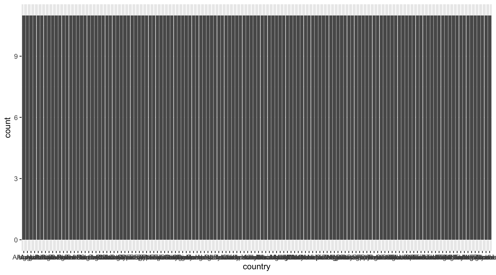
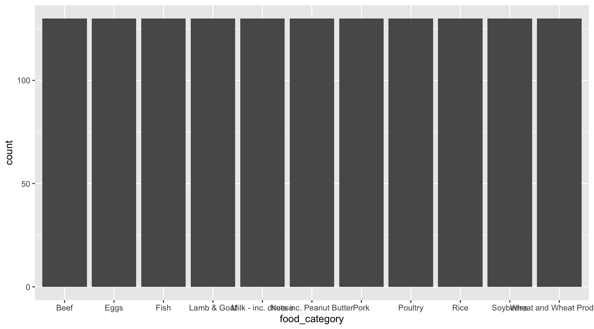
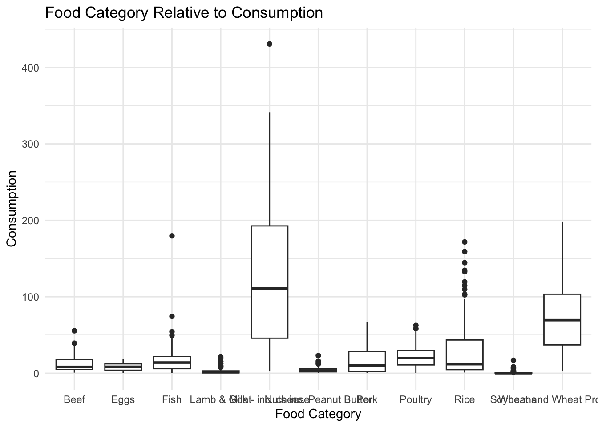

6 Exam1
What does the consumption.of each food category in each country look like?
6.1 Install Packages
We don’t need to install the packages again, they are already in R.
6.2 Load Packages
There are 9 packeges were loaded
6.3 Get Data
First load data tuesdata by using functio tt.load to get the data on data ‘2020-02-18’, then get data fc by only including the part food consumption in tuesdata.
6.4 Understand Data
# A tibble: 6 × 4
country food_category consumption co2_emmission
<chr> <chr> <dbl> <dbl>
1 Argentina Pork 10.5 37.2
2 Argentina Poultry 38.7 41.5
3 Argentina Beef 55.5 1712
4 Argentina Lamb & Goat 1.56 54.6
5 Argentina Fish 4.36 6.96
6 Argentina Eggs 11.4 10.5 [1] 1430 4spc_tbl_ [1,430 × 4] (S3: spec_tbl_df/tbl_df/tbl/data.frame)
$ country : chr [1:1430] "Argentina" "Argentina" "Argentina" "Argentina" ...
$ food_category: chr [1:1430] "Pork" "Poultry" "Beef" "Lamb & Goat" ...
$ consumption : num [1:1430] 10.51 38.66 55.48 1.56 4.36 ...
$ co2_emmission: num [1:1430] 37.2 41.53 1712 54.63 6.96 ...
- attr(*, "spec")=
.. cols(
.. country = col_character(),
.. food_category = col_character(),
.. consumption = col_double(),
.. co2_emmission = col_double()
.. )
- attr(*, "problems")=<externalptr> # A tibble: 6 × 4
country food_category consumption co2_emmission
<chr> <chr> <dbl> <dbl>
1 Bangladesh Eggs 2.08 1.91
2 Bangladesh Milk - inc. cheese 21.9 31.2
3 Bangladesh Wheat and Wheat Products 17.5 3.33
4 Bangladesh Rice 172. 220.
5 Bangladesh Soybeans 0.61 0.27
6 Bangladesh Nuts inc. Peanut Butter 0.72 1.276.5 Explore data
There are 11 food categories and 130 countries.
6.6 Understand Variables Individually
There are 3 variables that the grand research question involve.
country(bar graph), food_category(bar graph), consumption(density).


6.7 Understand Consumption
Overall Food Consumption/ Food Category: boxplot, histogram (using 11 box plots)
Code

Overall Food Consumption/country : boxplot(using 130 box plot)
6.8 Answering Grand RQ
histogram(facet +ridge), density(facet +ridge), boxplot(boxplots + facets), violin(violins + facets), map (color by consumption, facet by categories). Since there are 130 countries and 11 food categories, we will have too many facets for each method, and there might be too many information in the graph which makes it hard for people to read. So maybe map might be the best choice.
6.9 Beyond Viz
6.9.1 Effectiveness
labs(x=, y=, title=), change the color, cap, alt, scales, theme…
6.9.2 Additional Questions
How does co2_emmission look like in each country? How are co2_emmission and consumption are related to each other?